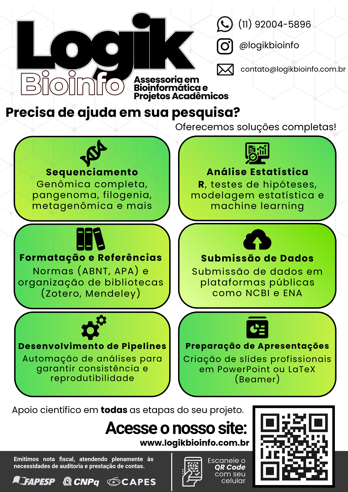
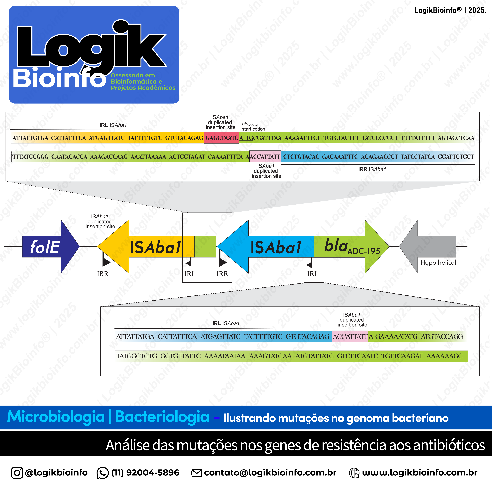
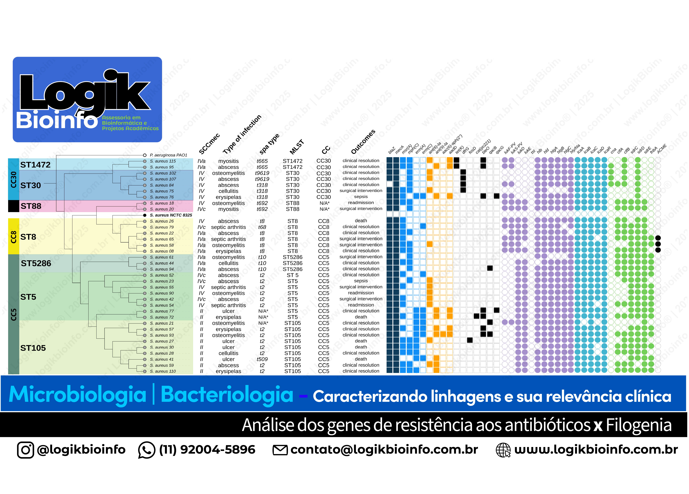
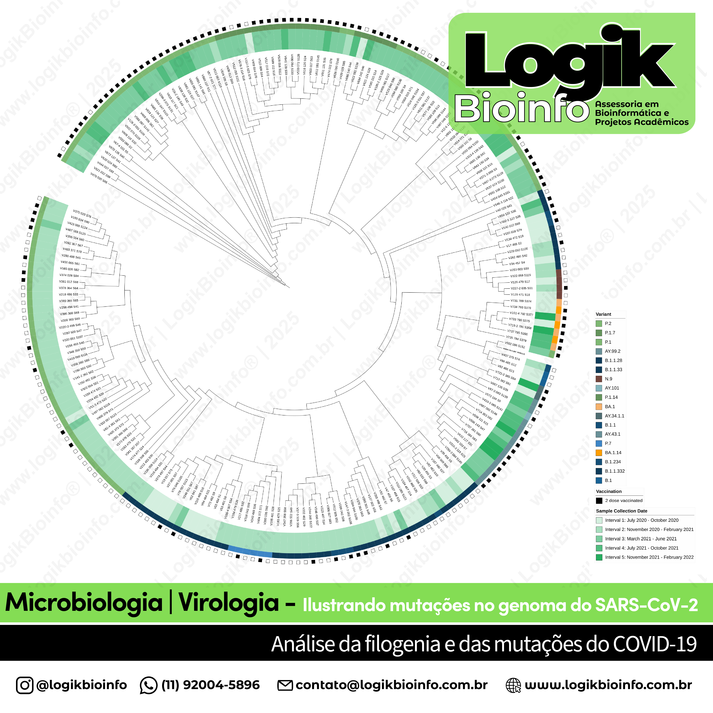
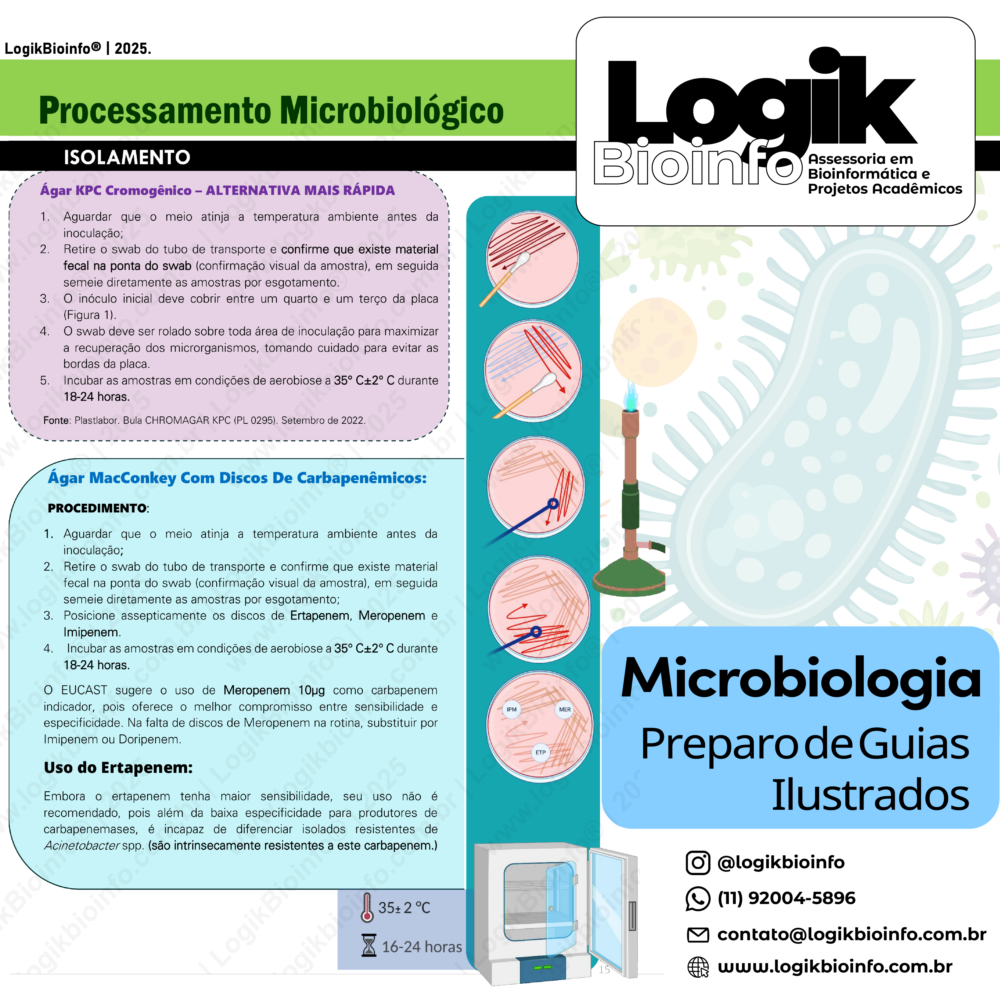

Bioinformatics Consulting and IT Solutions
Data analysis, pipeline development, and technical support to boost your research and projects.
Request a QuotePortfolio Highlights
Examples of analyses and visualizations created for microbiology, virology, and bacterial genomics projects.

Services Portfolio
Bioinformatics advisory services
Microbiology | Integrated Services

Resistance Analysis
ISAba1 gene mutations
Microbiology | Bacteriology - Genomics

Phylogenetic Analysis
Lineages vs. resistance
Microbiology | Clinical Phylogeny

Virology - SARS-CoV-2
COVID-19 phylogeny and mutations
Virology | SARS-CoV-2 - Phylogeny

Illustrated Guides
Microbiology processing workflows
Microbiology | Laboratory Flows